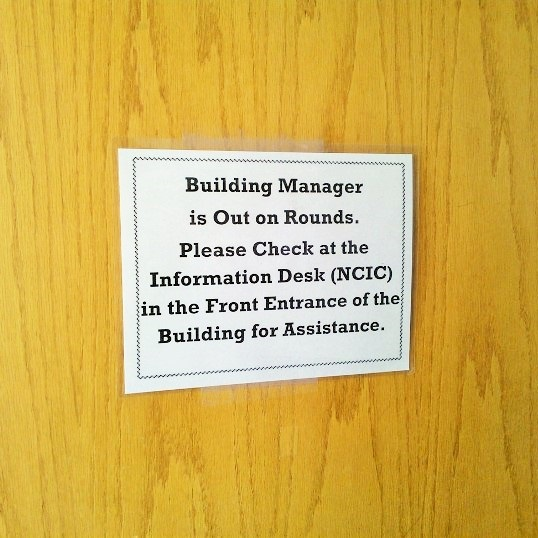

Pierpont Commons
Student Building Manager
I first started working as a student building manager at the Pierpont Commons in May 2014. Alongside other student building managers, I worked to support the visitors of Pierpont Commons and ensure the safety of patrons during administrative office after hours.
Background
The Pierpont Commons of the University of Michigan is one of the three student unions in the university which provide a wide range of student services. Situated in the North Campus, it becomes the focal point of visitors and students up north who search for a location to relax, eat, or study.
As the only student union building in the North Campus, the Pierpont Commons houses the adminsitrative office and services needed by the North Campus community. Since the building opens from 8 AM to 12 AM daily, the help of part time student workers are needed to supervise the building past regular business hours and on weekends. Hence, student building managers are in charge of maintaining the smooth operation of the Pierpont Commons, to ensure safety of its patrons, as well as to close and lock the building (and open during the weekends).
My Work and Experience
Working as a student building manager since May 2014, I cooperated with tenants and employees of the building to provide continuous service of the building. During these after hours, I am responsible for identifying and reporting safety and security problems of building, making rounds of the building once every 1-2 hours. I then close and lock the Pierpont Commons after making sure the building is empty at 12 AM for the closing shift. For the opening shifts, I'm responsible of unlocking the building during the weekends at 8 AM.
Within the 8-hour long shifts (9 on a weekday), I gain problem solving skills by managing situations like dysfunctional doors, broken equipment, or out-of-order toilets. I approach these issues by collaborating with the other departments of the building to solve them more effectively, which made me understand the importance of the teamwork. I also learnt how to interact with the patrons and tenants of the building in a professional and respectful manner, sometimes having to ask them to leave the building when it was time to lock the building.
The workload of being a student building manager isn't too heavy, but involves great responsibilty and trust. A student building manager represents the Pierpont Commons, and therefore I present myself with professionalism and courtesy to whomever I interact with. I formed relationships and made connections with members of the building of different departments, preserving harmony and promoting collaboration in order to assure successful and uninterrupted service of the Pierpont Commons.